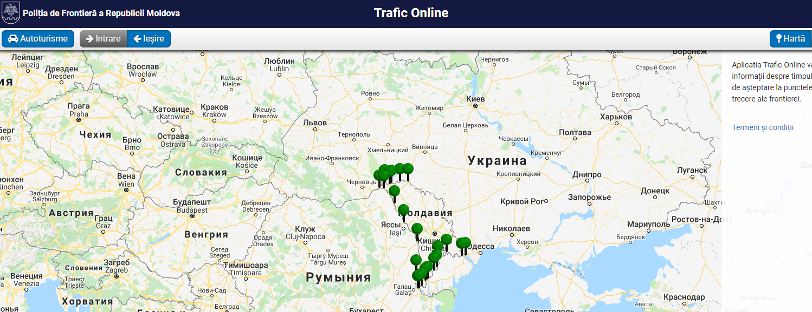

Молдова - http://tripadvisor.mfa.gov.ua/?p=607
Режим в’їзду: Безвізовий, за наступними документами: дипломатичний паспорт, службовий паспорт, паспорт громадянина України для виїзду за кордон, проїзний документ дитини, посвідчення особи моряка за наявності суднової ролі або виписки з неї, посвідчення члена екіпажу повітряного судна, посвідчення на повернення в Україну /тільки для повернення в України
Митні правила: Звільняються від митних платежів:
предмети особистого користування – особистий одяг, взуття, парфумерія, косметика, засоби гігієни та медикаменти, продукти харчування у межах особистої необхідності
пиво – 5 л
вино – 2 л
тютюнові вироби – 50 шт.
цигарки з тютюну та його замінників – 200 шт.
вироби зі шкіри – 3 од.
вироби з хутра – 1 од.
в’язаний одяг – 3 од.
текстильний одяг – 3 од.
магнітофони – 1 од.
відеоапарати – 1 од.
мобільні телефони – 2 од.
фотоапарати –1 од.
годинники – 3 од.
окуляри – 4 од.
інше майно, вартість якого не більше 200 Є
предмети біжутерії з дорого-цінних металів – до 5 од.
Валюта – до 10 000 Є – усне декларування, від 10 000 до 50000 – письмове.
У республіку заборонено ввозити без дозволу відповідних міністерств і відомств:
Зброя.
Боєприпаси.
Вибухові речовини.
Отруйні речовини.
Інші товари специфічного призначення.
Заборонено ввезення лікарських препаратів, наркотичних і психотропних речовин медичного призначення без дозволу Міністерства охорони здоров'я в кількості більшій, ніж для однієї людини на один курс лікування.
При ввезенні тварин необхідно пред'явити ветеринарне свідоцтво, відмітку про щеплення.
Автомобільне сполучення
Через відносну близкість України з Молдовою найзручніше туди дістатися за допомогою автомобільного транспорту по автошляхах. Час в дорозі з Києва до кордону з Молдовою займе приблизно – 4, 5 години. З Одеси менше - приблизно 2 години. Деякий час займе і проходження таможенного пункту на кордоні двух країн.
Для зручнішого проходження кордону Україна – Молдова, стан трафіку на кордоні можна побачити завчасно в режимі онлайн за допомогою сайту http://www.border.gov.md/index.php/ro/ . Таким чином подорожуючі можуть вирахувати скільки часу в них займе перетин кордону.

Так, зеленим кольором відзначені пункти, де час очікування становить до 30 хвилин, жовтим - до 60 хвилин, а червоним - понад годину.
При наведенні на той чи інший пункт можна побачити точний час очікування, а при натисканні у спливаючому вікні кнопки "Navigare către" прокласти маршрут від місця знаходження до митного пункту.
Подорожуючим
автомобілем варто знати, що у
Республіці Молдова діє закон про
оподаткування за користування
автомобільними дорогами. Об’єктом
оподаткування є автомобілі, які не
зареєстровані в Республіці Молдова та
перебувають на обліку в інших державах,
і в’їжджають на територію РМ або
перетинають
її
транзитом.
Ставки
збору (віньєтка) встановлюються в євро.
У
випадку відсутності оплати віньєтки
нараховуються грошовий штраф.
Збір
сплачується:
а) на митних постах;
б) в авторизованих пунктах.
Оплата здійснюється готівкою або по перерахуванню в молдовських леях, або в іноземній валюті по офіційному курсу молдовського лея, діючому на дату здійснення платежу. При сплаті віньєтки компетентний орган видає сертифікат, який підтверджує сплату вказаного збору. Віньєтка сплачується суб’єктами оподаткування на період дії: 7 днів – 4 євро, 15 днів – 8 євро, 30 днів – 14 євро, 90 днів – 30 євро.